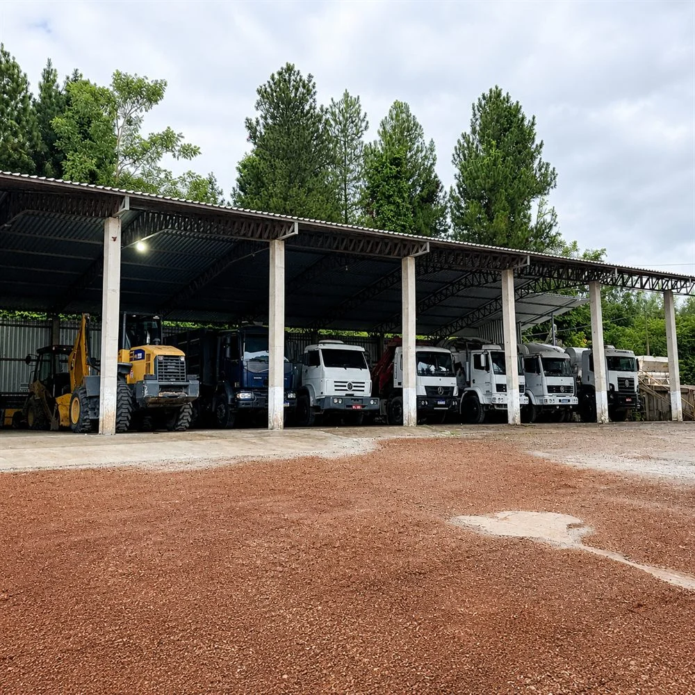
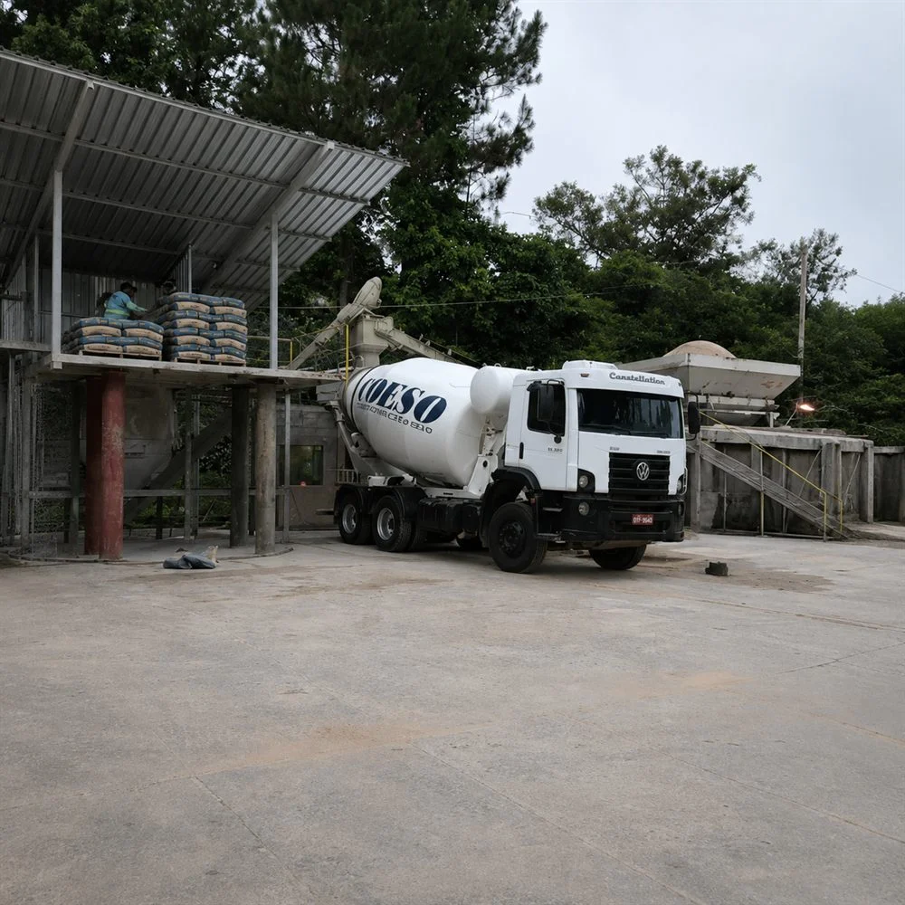

Nossa Trajetória & História
Conheça a história de quem se tornou referência em Vilhena - RO, unindo estrutura robusta e liderança pericial de engenharia.
Uma Década e Meia de Solidez
Há 15 anos, a COESO iniciava suas atividades em Vilhena - RO com um objetivo claro: trazer o mais alto padrão tecnológico e precisão científica para a construção civil regional.
Nascida da paixão pela engenharia de infraestrutura, a empresa rapidamente percebeu a necessidade de canteiros mais organizados, concretagens controladas em laboratório e fornecimento de peças pré-moldadas de alta confiabilidade. O mercado de Vilhena e arredores exigia um parceiro estruturado, pontual e que blindasse os projetos de patologias e desperdícios estruturais.
Nessa jornada de 15 anos de constante evolução e inovação em maquinários, a liderança técnica do nosso Engenheiro Chefe, Jeferson Piccoli Costa (com mais de 25 anos de formação e prática de excelência no setor), foi e continua sendo o pilar central que garante a conformidade jurídica, segurança ocupacional sob rígidos padrões periciais e o sucesso indiscutível de centenas de empreendimentos industriais, comerciais e habitacionais.
+15
Anos de experiência
+275
Clientes satisfeitos
+825
Projetos executados




Nossa Estrutura
A força da COESO não está apenas na teoria de nossos cálculos estruturais ou no MPa exato do nosso concreto usinado. Ela reside em nossa formidável infraestrutura operacional. Investimos continuamente em máquinas robustas que elevam a produtividade nos canteiros, agilizam prazos e asseguram precisão cirúrgica em cada movimentação de terra, concretagem ou montagem de estruturas pré-moldadas pesadas.
Com estrutura para diversos tipos de pré-moldados, capacidade de produção em larga escala, acompanhamento de todos os projetos com atenção e rigor em toda obra.
A COESO opera com frota própria composta por betoneiras de alta capacidade, caminhões munck com grande capacidade de içamento, pás carregadeiras, motoniveladoras e equipamentos laboratoriais de última geração.
A COESO opera com frota própria garantindo máquinas em estado de conservação impecável com vistorias e manutenções preventivas severas.